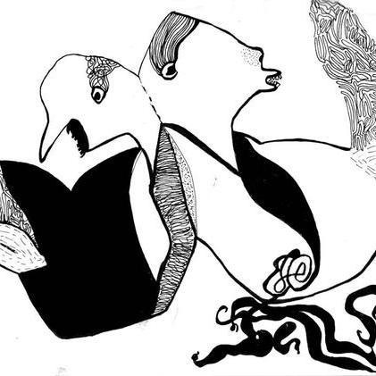
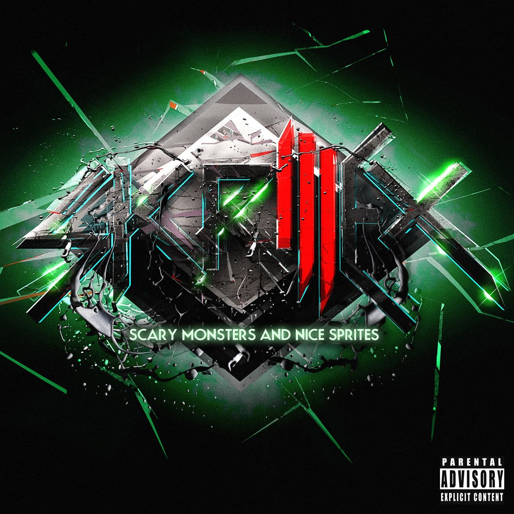
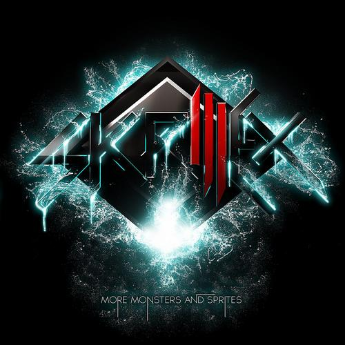
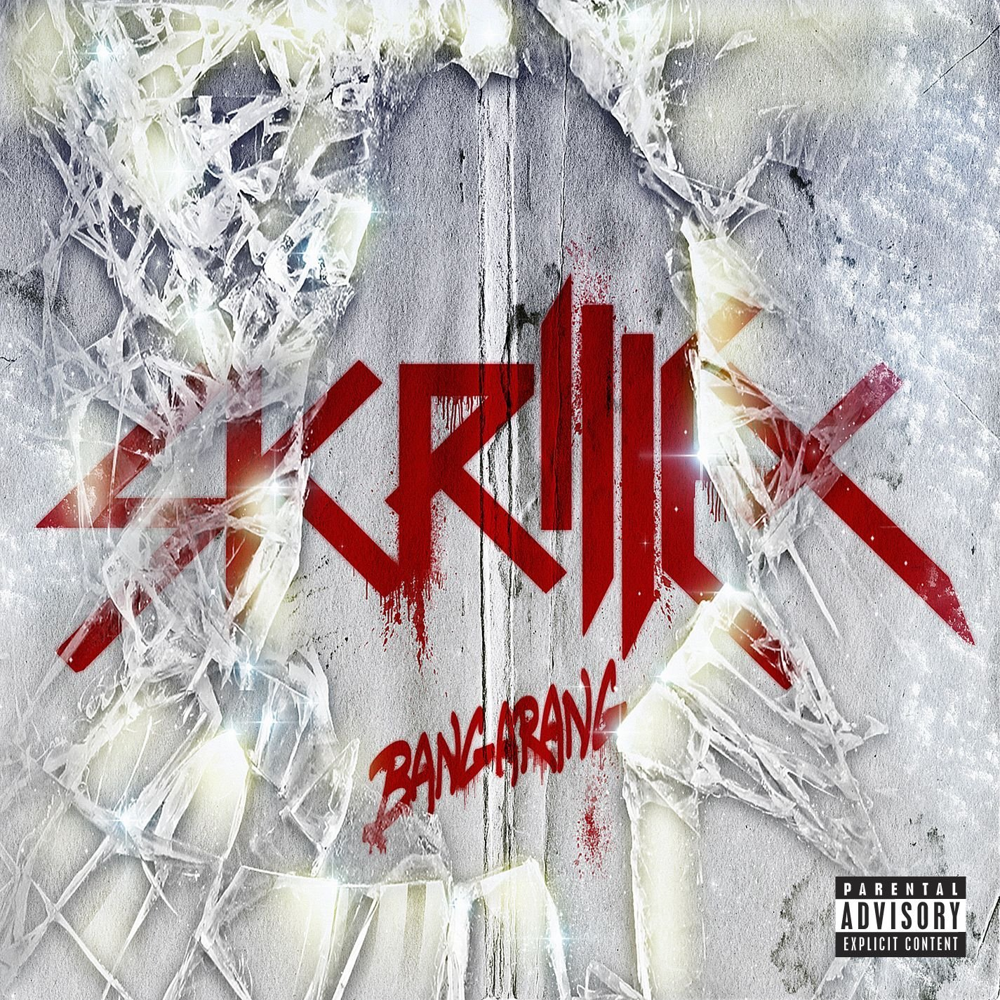
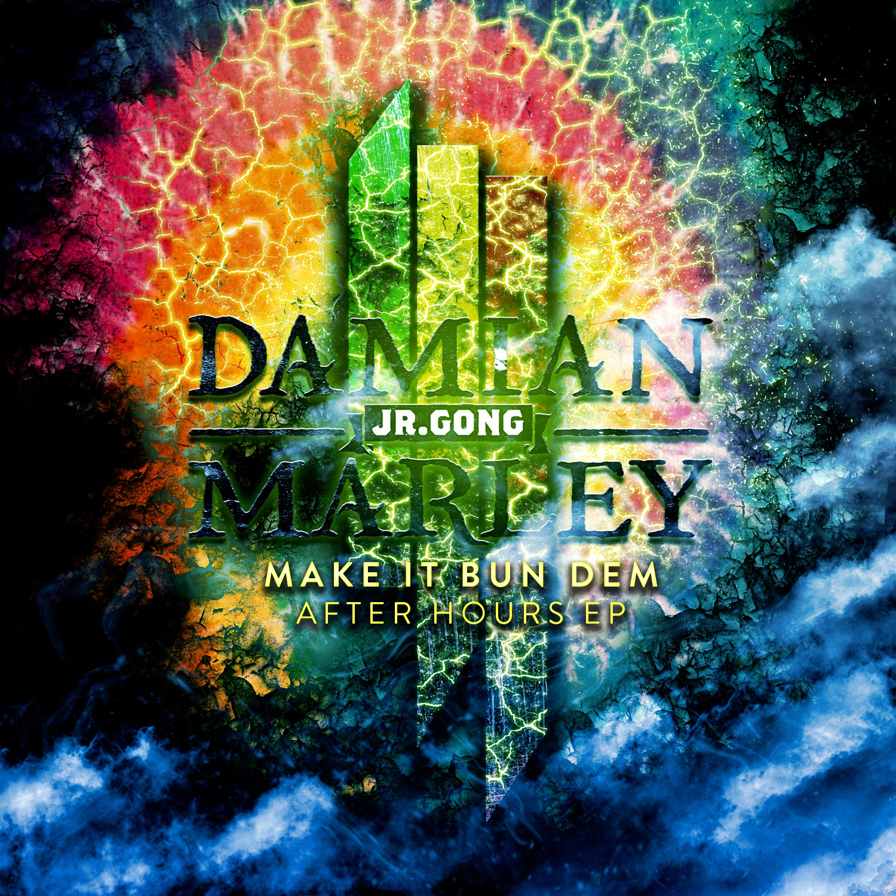

Skrillex Discography
Click on Album Art to open in iTunes or other store
Note - Not all songs are listed, there are too many unreleased songs!
Extended Plays [EP]

Bells 2008
Bells is Sonny Moore's first album, though it was never released because Atlantic Records pulled its release.
Skrillex Wiki
Gypsyhook EP April, 2009
The first solo release under his real name, Sonny Moore.
Skrillex Wiki Wikipedia

Scary Monsters and Nice Sprites October, 2010
Second EP by Skrillex. It was originally only released on Beatport, but later made it to CD and other forms.
Skrillex Wiki Wikipedia

More Monsters and Sprites June, 2011
Album continuing Scary Monsters and Nice Sprites. It was originally only released on Beatport, but later made it to CD and other forms.
Skrillex Wiki Wikipedia

Bangarang December, 2011
Bangarang was released on Beatport on December 23rd, 2011, two days before Christmas. The Doors were featured in the song "Right on Time", and Skrillex said in an interview that they were his role models when he was a kid.
Skrillex Wiki WikipediaAfter Hours EP Cover Art">
After Hours EP August, 2012
This album contains the song "Make it Bun Dem" featuring Damian "Jr. Gong" Marley, Bob Marley's son. This originally had the lyrics to Damian's song "Welcome to Jamrock", but was re-recorded with new vocals.
Skrillex Wiki Wikipedia